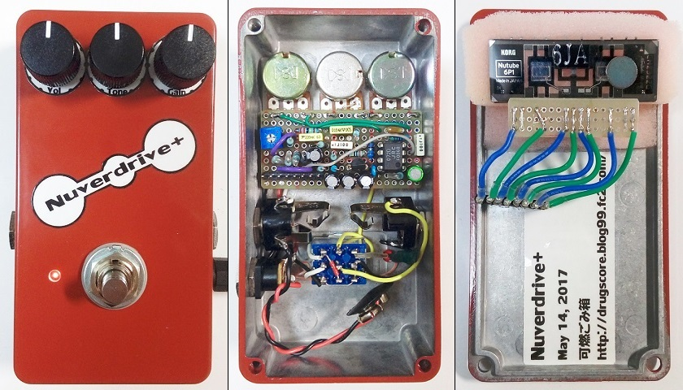

Nuverdrive+プレゼント（終了しました）
2017年05月16日 カテゴリー：メモ・雑記

Nuverdrive+をもう一台作りました。もしも欲しいという方がいらっしゃれば、上写真の赤色のバージョンをプレゼントいたします（希望者多数の場合は抽選）。下記の2つの方法のうちいずれかで連絡お願いします。締め切りは2017年6月10日（土）です。※万一故障した時に、修理対応できるかどうかは不明です。ご了承ください。
＜方法1＞
Twitterの私のアカウント宛に、「Nuverdrive+希望」と記載してダイレクトメッセージ送付
※無理にフォローやリツイートをされる必要はありません。
＜方法2＞
当ブログ右側下部のメールフォームにお名前（ニックネームでOK）とメールアドレスを記入の上、件名と本文に「Nuverdrive+希望」と記載して送信
（以下Nutubeに関する個人的感想）
Nutubeは低電圧で動くというのが大きなメリットですが、実際はあまりコンパクトエフェクター向きではないと思います。増幅率が低く、1個（2回路）だけで歪ませるのは難しいです。また、マイクロフォニックノイズがあるため防振対策が必要で、ケースがある程度大型になってしまいます。結局、普通の真空管+スイッチング電源の方が楽かもしれません。今まで同じエフェクターを2個作ることはありませんでしたが、どうしてもNutubeを使った回路を新規に考える気にならなかったため、今回のプレゼント企画に至りました。
---以下2017年6月17日追記---
当選者の方にNuverdrive+が無事に届いたことが確認できました。多数のご応募ありがとうございました。